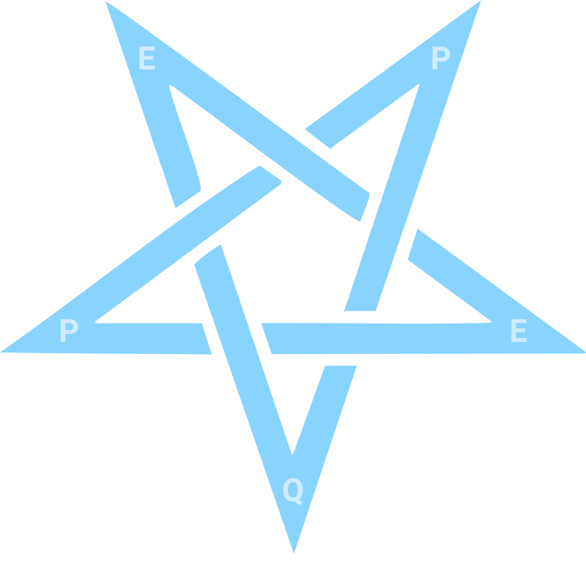

QEEPP Starfish Diagram Illustrates Transformation Maturity
QEEPP Starfish Diagram
The QEEPP Starfish represents the interconnectedness of the five dimensions.
It manifests awareness, guidance, protection, resilience, adaptability, balance, and structural strength.

What the starfish symbolizes
Awareness and perception
Starfish have a unique anatomy that allows them to sense their environment and react quickly to change.
Guidance and protection
Islanders believed that starfish protect sailors from danger while guiding them through unfamiliar waters.
Renewal and regeneration
Starfish have a complex nervous system and anatomy that enable them to regrow lost limbs and restore symmetry.
Strength and resilience
Starfish can thrive in challenging conditions and adapt to changing environments.
Balance and harmony
Starfish’s unique symmetry and regenerative ability represent the interconnectedness of all elements.
QEEPP Starfish Diagram Zone Definitions
Governance Zone • The transformation is aligned and monitored. Ambition Zone • The transformation is optimized for scale. Stability Zone • The transformation is structured and stabilized.
Governance Zone • The transformation is aligned and monitored. Ambition Zone • The transformation is optimized for scale. Stability Zone • The transformation is structured and stabilized.
The outer starfish represents the ideal shape, which reflects the goal of a fully structured transformation.
The inner shape illustrates the QEEPP assessment of the current state. Irregular inner shapes signal risk, while smaller shapes signal immaturity.
QEEPP Starfish Assessment Diagram Example
SUCCESSFUL TRANSFORMATION
GOVERNANCE ZONE
AMBITION ZONE
STABILITY ZONE
STABILITY ZONE
Quality Stabilized
Effectiveness Aligned
Efficiency Optimized
Performance Measured
Productivity Scaled